Analyzing multienvironment trials using BLUP
Tiago Olivoto
2024-11-20
Source:vignettes/vignettes_blup.Rmd
vignettes_blup.RmdGetting started
In this section, we will use the data in data_ge. For
more information, please, see ?data_ge. Other data sets can
be used provided that the following columns are in the dataset:
environment, genotype, block/replicate and response variable(s). See the
section Rendering engine to know how HTML
tables were generated.
The first step is to inspect the data with the function
inspect().
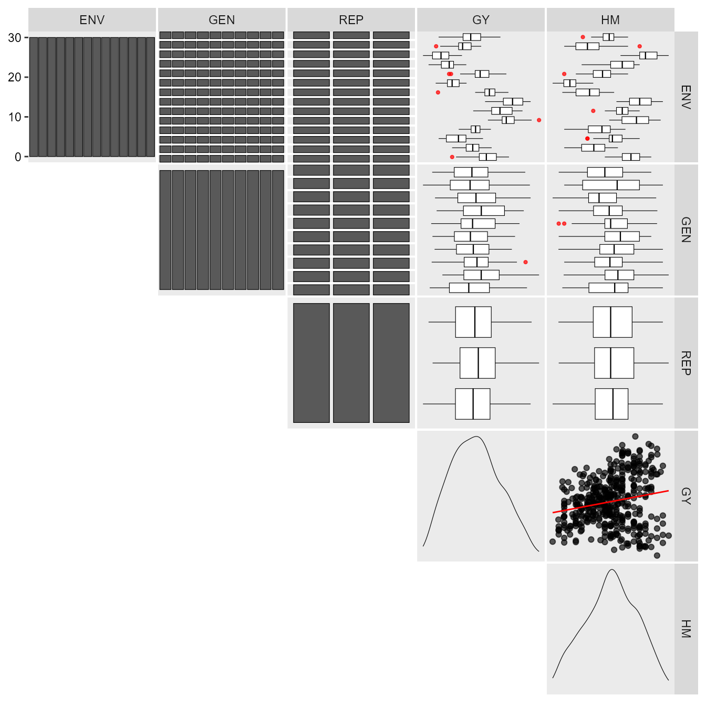
print_table(inspect)Analysis of single experiments using mixed-models
The function gamem() may be used to analyze single
experiments (one-way experiments) using a mixed-effect model according
to the following model:
where
is the value observed for the ith genotype in the jth
replicate (i = 1, 2, … g; j = 1, 2, ..,
r); being g and r the number of genotypes and
replicates, respectively;
is the random effect of the ith genotype;
is the fixed effect of the jth replicate; and
is the random error associated to
.
In this example, we will use the example data data_g from
metan package.
gen_mod <- gamem(data_g, GEN, REP,
resp = c(ED, CL, CD, KW, TKW, NKR))
# Evaluating trait ED |======= | 17% 00:00:00 Evaluating trait CL |=============== | 33% 00:00:00 Evaluating trait CD |====================== | 50% 00:00:00 Evaluating trait KW |============================= | 67% 00:00:00 Evaluating trait TKW |==================================== | 83% 00:00:00 Evaluating trait NKR |===========================================| 100% 00:00:00
# Method: REML/BLUP
# Random effects: GEN
# Fixed effects: REP
# Denominador DF: Satterthwaite's method
# ---------------------------------------------------------------------------
# P-values for Likelihood Ratio Test of the analyzed traits
# ---------------------------------------------------------------------------
# model ED CL CD KW TKW NKR
# Complete NA NA NA NA NA NA
# Genotype 2.73e-05 2.25e-06 0.118 0.0253 0.00955 0.216
# ---------------------------------------------------------------------------
# Variables with nonsignificant Genotype effect
# CD NKR
# ---------------------------------------------------------------------------The easiest way of obtaining the results of the model above is by
using the function get_model_data(). Let’s do it.
- Details of the analysis
get_model_data(gen_mod, "details") %>% print_table()
# Class of the model: gamem
# Variable extracted: details- Likelihood ratio test for genotype effect
get_model_data(gen_mod, "lrt") %>% print_table()
# Class of the model: gamem
# Variable extracted: lrt- Variance components and genetic parameters
get_model_data(gen_mod, "genpar") %>% print_table()
# Class of the model: gamem
# Variable extracted: genpar- Predicted means
get_model_data(gen_mod, "blupg") %>% print_table()
# Class of the model: gamem
# Variable extracted: blupgIn the above example, the experimental design was a complete
randomized block. It is also possible to analyze an experiment conducted
in an alpha-lattice design with the function gamem(). In
this case, the following model is fitted:
where
is the observed value of the ith genotype in the kth
block of the jth replicate (i = 1, 2, … g;
j = 1, 2, .., r; k = 1, 2, .., b);
respectively;
is the random effect of the ith genotype;
is the fixed effect of the jth complete replicate;
is the random effect of the kth incomplete block nested within
the j replicate; and
is the random error associated to
.
In this example, we will use the example data data_alpha
from metan package.
gen_alpha <- gamem(data_alpha, GEN, REP, YIELD, block = BLOCK)
# Evaluating trait YIELD |=========================================| 100% 00:00:00
# Method: REML/BLUP
# Random effects: GEN, BLOCK(REP)
# Fixed effects: REP
# Denominador DF: Satterthwaite's method
# ---------------------------------------------------------------------------
# P-values for Likelihood Ratio Test of the analyzed traits
# ---------------------------------------------------------------------------
# model YIELD
# Complete NA
# Genotype 1.18e-06
# rep:block 3.35e-03
# ---------------------------------------------------------------------------
# All variables with significant (p < 0.05) genotype effect
get_model_data(gen_alpha, "lrt") %>% print_table()
# Class of the model: gamem
# Variable extracted: lrt
get_model_data(gen_alpha, "details") %>% print_table()
# Class of the model: gamem
# Variable extracted: details
get_model_data(gen_alpha, "genpar") %>% print_table()
# Class of the model: gamem
# Variable extracted: genparThe BLUP model for MET trials
The simplest and well-known linear model with interaction effect used to analyze data from multi-environment trials is $$ {y_{ijk}} = {\rm{ }}\mu {\rm{ }} + \mathop \alpha \nolimits_i + \mathop \tau \nolimits_j + \mathop {(\alpha \tau )}\nolimits_{ij} + \mathop \gamma \nolimits_{jk} + {\rm{ }}\mathop \varepsilon \nolimits_{ijk} $$
where is the response variable (e.g., grain yield) observed in the kth block of the ith genotype in the jth environment (i = 1, 2, …, g; j = 1, 2, …, e; k = 1, 2, …, b); is the grand mean; is the effect of the ith genotype; is the effect of the jth environment; is the interaction effect of the ith genotype with the jth environment; is the effect of the kth block within the jth environment; and is the random error. In a mixed-effect model assuming and to be random effects, the above model can be rewritten as follows
where y is an vector of response variable ${\bf{y}} = {\rm{ }}{\left[ {{y_{111}},{\rm{ }}{y_{112}},{\rm{ }} \ldots ,{\rm{ }}{y_{geb}}} \right]^\prime }$; ${\bf{\beta }}$ is an vector of unknown fixed effects ; u is an vector of random effects ${\boldsymbol{u}} = {\rm{ }}{\left[ {{\alpha _1},{\alpha _2},...,{\alpha _g},\mathop {(\alpha \tau )}\nolimits_{11} ,\mathop {(\alpha \tau )}\nolimits_{12} ,...,\mathop {(\alpha \tau )}\nolimits_{ge} } \right]^\prime }$; X is an design matrix relating y to ${\bf{\beta }}$; Z is an design matrix relating y to u ; is an vector of random errors ${\boldsymbol{\varepsilon }} = {\rm{ }}{\left[ {{y_{111}},{\rm{ }}{y_{112}},{\rm{ }} \ldots ,{\rm{ }}{y_{geb}}} \right]^\prime }$;
The vectors and u are estimated using the well-known mixed model equation (Henderson 1975). $$ \left[ {\begin{array}{*{20}{c}}{{\boldsymbol{\hat \beta }}}\\{{\bf{\hat u}}}\end{array}} \right]{\bf{ = }}{\left[ {\begin{array}{*{20}{c}}{{\bf{X'}}{{\bf{R }}^{ - {\bf{1}}}}{\bf{X}}}&{{\bf{X'}}{{\bf{R }}^{ - {\bf{1}}}}{\bf{Z}}}\\{{\bf{Z'}}{{\bf{R }}^{ - {\bf{1}}}}{\bf{X}}}&{{\bf{Z'}}{{\bf{R }}^{ - {\bf{1}}}}{\bf{Z + }}{{\bf{G}}^{ - {\bf{1}}}}}\end{array}} \right]^ - }\left[ {\begin{array}{*{20}{c}}{{\bf{X'}}{{\bf{R }}^{ - {\bf{1}}}}{\bf{y}}}\\{{\bf{Z'}}{{\bf{R }}^{ - {\bf{1}}}}{\bf{y}}}\end{array}} \right] $$ where G and R are the variance-covariance matrices for random-effect vector u and residual vector ${\bf{\varepsilon }}$, respectively.
The function gamem_met() is used to fit the linear
mixed-effect model. The first argument is the data, in our example
data_ge. The arguments (env, gen,
and rep) are the name of the columns that contains the
levels for environments, genotypes, and replications, respectively.The
argument (resp) is the response variable to be analyzed.
The function allow a single variable (in this case GY) or a vector of
response variables. Here, we will use everything() to
analyse all numeric variables in the data. By default, genotype and
genotype-vs-environment interaction are assumed to be random effects.
Other effects may be considered using the random argument.
The last argument (verbose) control if the code is run
silently or not.
mixed_mod <-
gamem_met(data_ge,
env = ENV,
gen = GEN,
rep = REP,
resp = everything(),
random = "gen", #Default
verbose = TRUE) #Default
# Evaluating trait GY |====================== | 50% 00:00:00 Evaluating trait HM |============================================| 100% 00:00:01
# Method: REML/BLUP
# Random effects: GEN, GEN:ENV
# Fixed effects: ENV, REP(ENV)
# Denominador DF: Satterthwaite's method
# ---------------------------------------------------------------------------
# P-values for Likelihood Ratio Test of the analyzed traits
# ---------------------------------------------------------------------------
# model GY HM
# COMPLETE NA NA
# GEN 1.11e-05 5.07e-03
# GEN:ENV 2.15e-11 2.27e-15
# ---------------------------------------------------------------------------
# All variables with significant (p < 0.05) genotype-vs-environment interactionDiagnostic plot for residuals
The S3 generic function plot() is used to generate
diagnostic plots of residuals of the model.
plot(mixed_mod)
# `geom_smooth()` using formula = 'y ~ x'
# `geom_smooth()` using formula = 'y ~ x'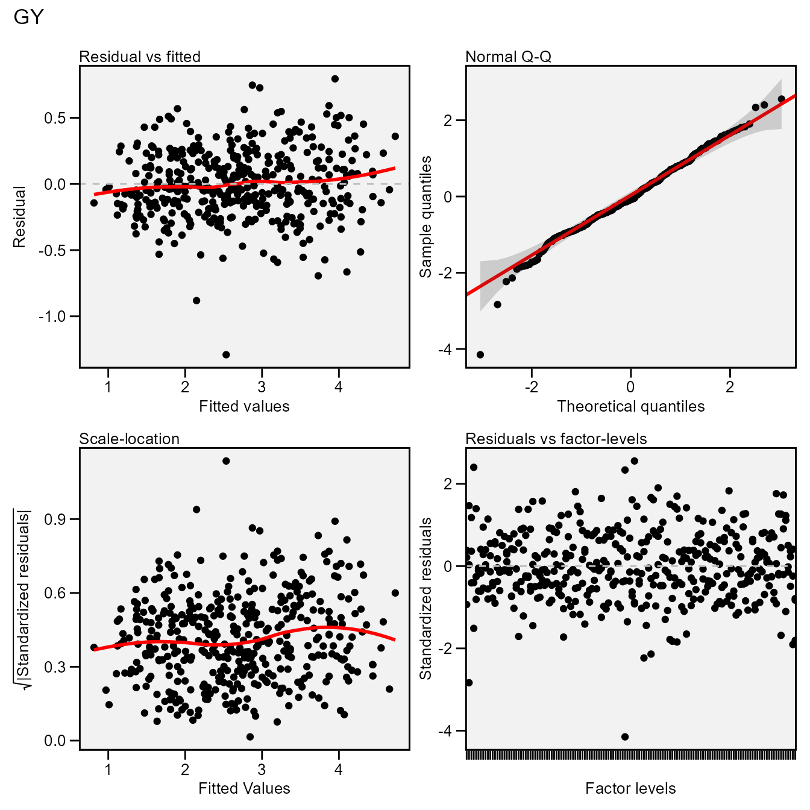
The normality of the random effects of genotype and interaction
effects may be also obtained by using type = "re".
plot(mixed_mod, type = "re")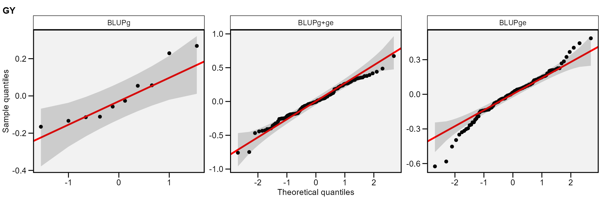
Printing the model outputs
Likelihood Ratio Tests
The output LRT contains the Likelihood Ratio Tests for
genotype and genotype-vs-environment random effects. We can get these
values with get_model_data()
data <- get_model_data(mixed_mod, "lrt")
print_table(data)Variance components and genetic parameters
In the output ESTIMATES, beyond the variance components
for the declared random effects, some important parameters are also
shown. Heribatility is the broad-sense heritability,
,
estimated by
where is the genotypic variance; is the genotype-by-environment interaction variance; and is the residual variance.
GEIr2 is the coefficient of determination of the interaction effects, , estimated by
Heribatility of means is the heribability on the mean basis, , estimated by
where e and b are the number of environments and blocks, respectively; Accuracy is the accuracy of selection, Ac, estimated by
rge is the genotype-environment correlation, , estimated by
CVg and CVr are the the genotypic coefficient of variation and the residual coefficient of variation estimated, respectively, by and where is the grand mean.
CV ratio is the ratio between genotypic and residual coefficient of variation.
data <- get_model_data(mixed_mod)
# Class of the model: waasb
# Variable extracted: genpar
print_table(data)BLUP for genotypes
print_table(mixed_mod$GY$BLUPgen)The function get_model_data() may be used to easily get
the data from a model fitted with the function gamem_met(),
especially when more than one variables are used. The following code
return the predicted mean of each genotype for five variables of the
data data_ge2.
get_model_data(mixed_mod, what = "blupg")
# Class of the model: waasb
# Variable extracted: blupg
# # A tibble: 10 × 3
# GEN GY HM
# <fct> <dbl> <dbl>
# 1 G1 2.62 47.4
# 2 G10 2.51 48.4
# 3 G2 2.73 47.1
# 4 G3 2.90 47.8
# 5 G4 2.65 48.0
# 6 G5 2.56 48.9
# 7 G6 2.56 48.5
# 8 G7 2.73 48.0
# 9 G8 2.94 48.8
# 10 G9 2.54 48.0Plotting the BLUP for genotypes
library(ggplot2)
a <- plot_blup(mixed_mod)
b <- plot_blup(mixed_mod,
col.shape = c("gray20", "gray80"),
plot_theme = theme_metan(grid = "y")) +
coord_flip()
arrange_ggplot(a, b, tag_levels = "a")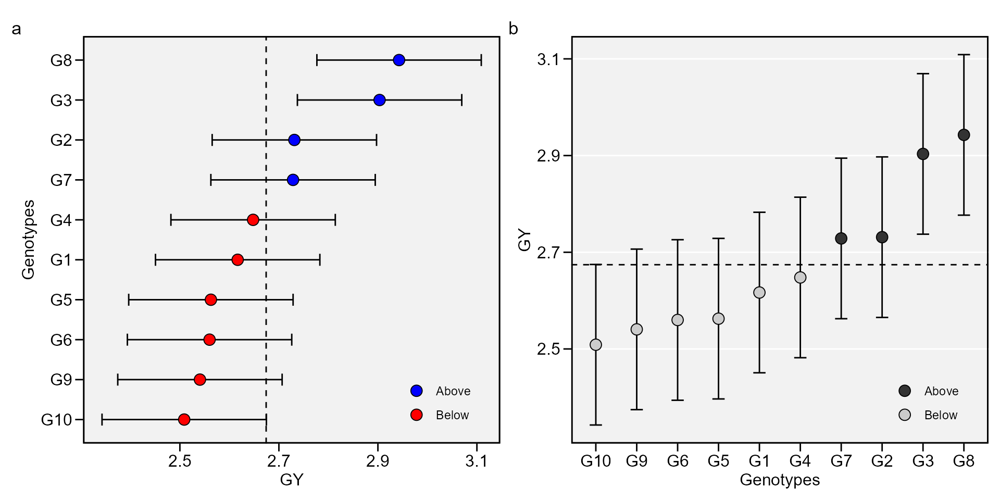
This output shows the predicted means for genotypes. BLUPg is the genotypic effect , which considering balanced data and genotype as random effect is estimated by
where is the shrinkage effect for genotype. Predicted is the predicted mean estimated by
where is the grand mean. LL and UL are the lower and upper limits, respectively, estimated by with
where is the Student’s t value for a two-tailed t test at a given probability error; is the accuracy of selection and is the genotypic variance.
BLUP for genotypes X environment combination
print_table(mixed_mod$GY$BLUPint)This output shows the predicted means for each genotype and environment combination. BLUPg is the genotypic effect described above. BLUPge is the genotypic effect of the ith genotype in the jth environment , which considering balanced data and genotype as random effect is estimated by where is the shrinkage effect for the genotype-by-environment interaction; BLUPg+ge is ; Predicted is the predicted mean () estimated by
Some useful information
The following pieces of information are provided in
Details output. Nenv, the number of
environments in the analysis; Ngen the number of
genotypes in the analysis; mresp The value attributed
to the highest value of the response variable after rescaling it;
wresp The weight of the response variable for
estimating the WAASBY index. Mean the grand mean;
SE the standard error of the mean; SD
the standard deviation. CV the coefficient of variation
of the phenotypic means, estimating WAASB, Min the
minimum value observed (returning the genotype and environment),
Max the maximum value observed (returning the genotype
and environment); MinENV the environment with the lower
mean, MaxENV the environment with the larger mean
observed, MinGEN the genotype with the lower mean,
MaxGEN the genotype with the larger.
data <- get_model_data(mixed_mod, "details")
# Class of the model: waasb
# Variable extracted: details
print_table(data)The WAASB object
The function waasb() function computes the Weighted
Average of the Absolute Scores considering all possible IPCA from the
Singular Value Decomposition of the BLUPs for genotype-vs-environment
interaction effects obtained by an Linear Mixed-effect Model (Olivoto et al.
2019), as follows:
where is the weighted average of absolute scores of the ith genotype; is the scores of the ith genotype in the kth IPCA; and is the explained variance of the kth PCA for , .
waasb_model <-
waasb(data_ge,
env = ENV,
gen = GEN,
rep = REP,
resp = everything(),
random = "gen", #Default
verbose = TRUE) #Default
# Evaluating trait GY |====================== | 50% 00:00:01 Evaluating trait HM |============================================| 100% 00:00:02
# Method: REML/BLUP
# Random effects: GEN, GEN:ENV
# Fixed effects: ENV, REP(ENV)
# Denominador DF: Satterthwaite's method
# ---------------------------------------------------------------------------
# P-values for Likelihood Ratio Test of the analyzed traits
# ---------------------------------------------------------------------------
# model GY HM
# COMPLETE NA NA
# GEN 1.11e-05 5.07e-03
# GEN:ENV 2.15e-11 2.27e-15
# ---------------------------------------------------------------------------
# All variables with significant (p < 0.05) genotype-vs-environment interaction
data <- waasb_model$GY$model
print_table(data)The output generated by the waasb() function is very
similar to those generated by the waas() function. The main
difference here, is that the singular value decomposition is based on
the BLUP for GEI effects matrix.
Eigenvalues of the BLUP_GEI matrix
data <- waasb_model$GY$PCA
print_table(data)
plot_eigen(waasb_model, size.lab = 14, size.tex.lab = 14)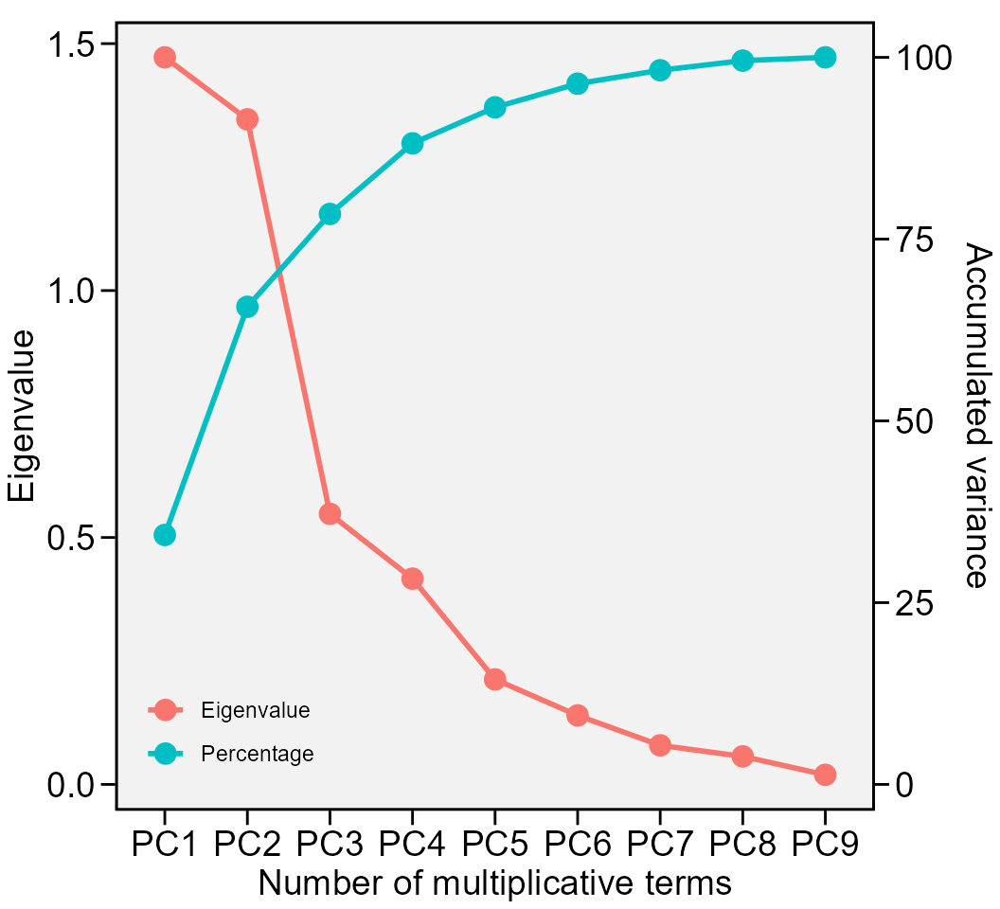
The above output shows the eigenvalues and the proportion of variance explained by each principal component axis of the BLUP interaction effects matrix.
Biplots
Provided that an object of class waasb is available in
the global environment, the graphics may be obtained using the function
plot_scores(). To do that, we will revisit the previusly
fitted model WAASB . Please, refer to
?plot_scores for more details. Four types of graphics can
be generated: 1 =
;
2 =
;
3 =
;
and 4 = a graphic with nominal yield as a function of the environment
PCA1 scores.
biplot type 1: GY x PC1
c <- plot_scores(waasb_model, type = 1)
d <- plot_scores(waasb_model,
type = 1,
col.gen = "black",
col.env = "red",
col.segm.env = "red",
axis.expand = 1.5)
arrange_ggplot(c, d, tag_levels = list(c("c", "d")))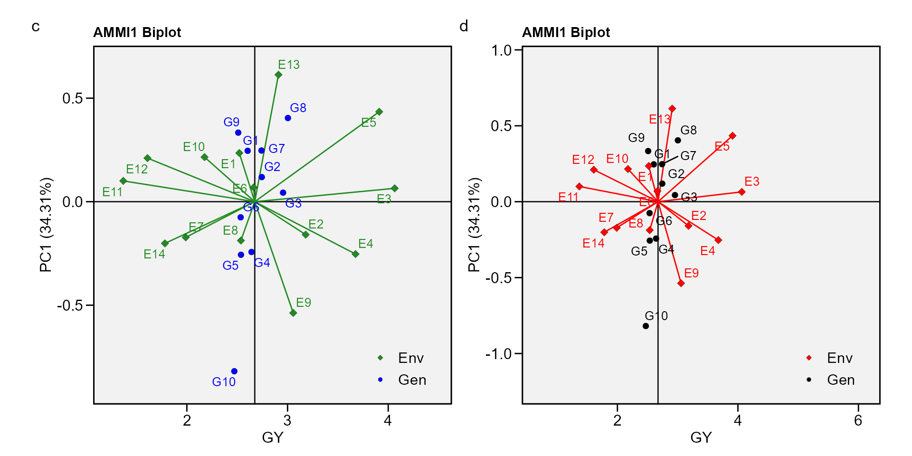
biplot type 2: PC1 x PC2
e <- plot_scores(waasb_model, type = 2)
f <- plot_scores(waasb_model,
type = 2,
polygon = TRUE,
col.segm.env = "transparent",
plot_theme = theme_metan_minimal())
arrange_ggplot(e, f, tag_levels = list(c("e", "f")))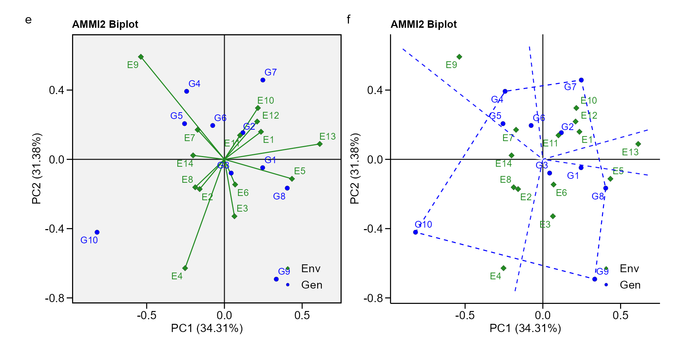
biplot type 3: GY x WAASB
The quadrants proposed by Olivoto et al. (2019) in the following biplot represent four classifications regarding the joint interpretation of mean performance and stability. The genotypes or environments included in quadrant I can be considered unstable genotypes or environments with high discrimination ability, and with productivity below the grand mean. In quadrant II are included unstable genotypes, although with productivity above the grand mean. The environments included in this quadrant deserve special attention since, in addition to providing high magnitudes of the response variable, they present a good discrimination ability. Genotypes within quadrant III have low productivity, but can be considered stable due to the lower values of WAASB. The lower this value, the more stable the genotype can be considered. The environments included in this quadrant can be considered as poorly productive and with low discrimination ability. The genotypes within the quadrant IV are highly productive and broadly adapted due to the high magnitude of the response variable and high stability performance (lower values of WAASB).
g <- plot_scores(waasb_model, type = 3)
h <- plot_scores(waasb_model, type = 3,
x.lab = "My customized x label",
size.shape.gen = 3,
size.tex.gen = 2,
x.lim = c(1.2, 4.7),
x.breaks = seq(1.5, 4.5, by = 0.5),
plot_theme = theme_metan(color.background = "white"))
arrange_ggplot(g, h, tag_levels = list(c("g", "h")))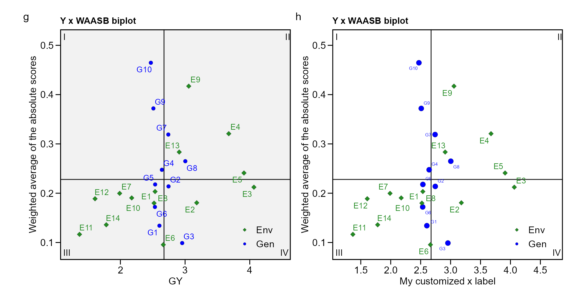
To obtain the WAASB index for a set of variables, the function
get_model_data() is used, as shown bellow.
waasb(data_ge2, ENV, GEN, REP,
resp = c(PH, ED, TKW, NKR)) %>%
get_model_data(what = "WAASB") %>%
print_table()
# Evaluating trait PH |=========== | 25% 00:00:00 Evaluating trait ED |====================== | 50% 00:00:01 Evaluating trait TKW |================================ | 75% 00:00:01 Evaluating trait NKR |===========================================| 100% 00:00:02
# Method: REML/BLUP
# Random effects: GEN, GEN:ENV
# Fixed effects: ENV, REP(ENV)
# Denominador DF: Satterthwaite's method
# ---------------------------------------------------------------------------
# P-values for Likelihood Ratio Test of the analyzed traits
# ---------------------------------------------------------------------------
# model PH ED TKW NKR
# COMPLETE NA NA NA NA
# GEN 9.39e-01 2.99e-01 1.00e+00 0.78738
# GEN:ENV 1.09e-13 1.69e-08 4.21e-10 0.00404
# ---------------------------------------------------------------------------
# All variables with significant (p < 0.05) genotype-vs-environment interaction
# Class of the model: waasb
# Variable extracted: WAASBbiplot type 4 : nominal yield and environment IPCA1
i <- plot_scores(waasb_model, type = 4)
j <- plot_scores(waasb_model,
type = 4,
size.tex.gen = 1.5,
color = FALSE,
col.alpha.gen = 0,
col.alpha.env = 0,
plot_theme = theme_metan(color.background = "white"))
arrange_ggplot(i, j, tag_levels = list(c("i", "j")))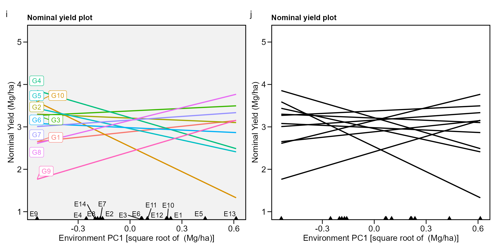
Simultaneous selection for mean performance and stability
The waasby index is used for genotype ranking considering both the stability (waasb) and mean performance (y) based on the following model (Olivoto et al. 2019).
where is the superiority index for the i-th genotype; and are the rescaled values (0-100) for the response variable (y) and the stability (WAAS or WAASB), respectively; and are the weights for mean performance and stability, respectively.
This index was also already computed and stored into AMMI_model>GY>model. An intuitively plot may be obtained by running
i <- plot_waasby(waasb_model)
j <- plot_waasby(waasb_model, col.shape = c("gray20", "gray80"))
arrange_ggplot(i, j, tag_levels = list(c("e", "f")))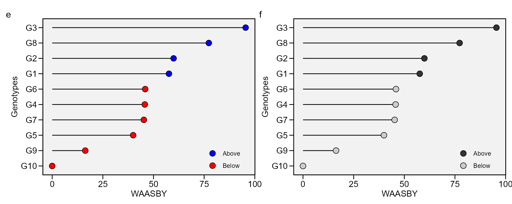
In the following example, we will apply the function
wsmp() to the previously fitted model
waasb_model aiming at planning different scenarios of
waasby estimation by changing the weights assigned to
the stability and the mean performance.vThe number of scenarios is
defined by the arguments increment. By default, twenty-one
different scenarios are computed. In this case, the the superiority
index waasby is computed considering the following
weights: stability (waasb or waas) = 100; mean performance = 0. In other
words, only stability is considered for genotype ranking. In the next
iteration, the weights becomes 95/5 (since increment = 5). In the third
scenario, the weights become 90/10, and so on up to these weights become
0/100. In the last iteration, the genotype ranking for WAASY or WAASBY
matches perfectly with the ranks of the response variable.
scenarios <- wsmp(waasb_model)
# Ranks considering 0 for Y and 100 for WAASB | | 1% 00:00:00 Ranks considering 0 for Y and 100 for WAASB | | 1% 00:00:00 Ranks considering 0 for Y and 100 for WAASB | | 2% 00:00:00 Ranks considering 0 for Y and 100 for WAASB | | 2% 00:00:00 Ranks considering 0 for Y and 100 for WAASB |= | 3% 00:00:00 Ranks considering 0 for Y and 100 for WAASB |= | 3% 00:00:00 Ranks considering 0 for Y and 100 for WAASB |= | 4% 00:00:00 Ranks considering 0 for Y and 100 for WAASB |= | 4% 00:00:00 Ranks considering 0 for Y and 100 for WAASB |= | 5% 00:00:00 Ranks considering 5 for Y and 95 for WAASB |= | 5% 00:00:00 Ranks considering 5 for Y and 95 for WAASB |= | 6% 00:00:00 Ranks considering 5 for Y and 95 for WAASB |= | 6% 00:00:00 Ranks considering 5 for Y and 95 for WAASB |= | 7% 00:00:00 Ranks considering 5 for Y and 95 for WAASB |== | 7% 00:00:00 Ranks considering 5 for Y and 95 for WAASB |== | 8% 00:00:00 Ranks considering 5 for Y and 95 for WAASB |== | 8% 00:00:00 Ranks considering 5 for Y and 95 for WAASB |== | 9% 00:00:00 Ranks considering 5 for Y and 95 for WAASB |== | 10% 00:00:00 Ranks considering 10 for Y and 90 for WAASB |== | 10% 00:00:00 Ranks considering 10 for Y and 90 for WAASB |== | 11% 00:00:00 Ranks considering 10 for Y and 90 for WAASB |== | 11% 00:00:00 Ranks considering 10 for Y and 90 for WAASB |== | 12% 00:00:00 Ranks considering 10 for Y and 90 for WAASB |== | 12% 00:00:00 Ranks considering 10 for Y and 90 for WAASB |=== | 13% 00:00:00 Ranks considering 10 for Y and 90 for WAASB |=== | 13% 00:00:00 Ranks considering 10 for Y and 90 for WAASB |=== | 14% 00:00:00 Ranks considering 10 for Y and 90 for WAASB |=== | 14% 00:00:00 Ranks considering 15 for Y and 85 for WAASB |=== | 15% 00:00:00 Ranks considering 15 for Y and 85 for WAASB |=== | 15% 00:00:00 Ranks considering 15 for Y and 85 for WAASB |=== | 16% 00:00:00 Ranks considering 15 for Y and 85 for WAASB |=== | 16% 00:00:00 Ranks considering 15 for Y and 85 for WAASB |=== | 17% 00:00:00 Ranks considering 15 for Y and 85 for WAASB |=== | 17% 00:00:00 Ranks considering 15 for Y and 85 for WAASB |==== | 18% 00:00:00 Ranks considering 15 for Y and 85 for WAASB |==== | 19% 00:00:00 Ranks considering 15 for Y and 85 for WAASB |==== | 19% 00:00:00 Ranks considering 20 for Y and 80 for WAASB |==== | 20% 00:00:00 Ranks considering 20 for Y and 80 for WAASB |==== | 20% 00:00:00 Ranks considering 20 for Y and 80 for WAASB |==== | 21% 00:00:00 Ranks considering 20 for Y and 80 for WAASB |==== | 21% 00:00:00 Ranks considering 20 for Y and 80 for WAASB |==== | 22% 00:00:00 Ranks considering 20 for Y and 80 for WAASB |==== | 22% 00:00:00 Ranks considering 20 for Y and 80 for WAASB |===== | 23% 00:00:00 Ranks considering 20 for Y and 80 for WAASB |===== | 23% 00:00:00 Ranks considering 20 for Y and 80 for WAASB |===== | 24% 00:00:00 Ranks considering 25 for Y and 75 for WAASB |===== | 24% 00:00:00 Ranks considering 25 for Y and 75 for WAASB |===== | 25% 00:00:00 Ranks considering 25 for Y and 75 for WAASB |===== | 25% 00:00:00 Ranks considering 25 for Y and 75 for WAASB |===== | 26% 00:00:00 Ranks considering 25 for Y and 75 for WAASB |===== | 26% 00:00:00 Ranks considering 25 for Y and 75 for WAASB |===== | 27% 00:00:00 Ranks considering 25 for Y and 75 for WAASB |====== | 28% 00:00:00 Ranks considering 25 for Y and 75 for WAASB |====== | 28% 00:00:00 Ranks considering 25 for Y and 75 for WAASB |====== | 29% 00:00:00 Ranks considering 30 for Y and 70 for WAASB |====== | 29% 00:00:00 Ranks considering 30 for Y and 70 for WAASB |====== | 30% 00:00:00 Ranks considering 30 for Y and 70 for WAASB |====== | 30% 00:00:00 Ranks considering 30 for Y and 70 for WAASB |====== | 31% 00:00:00 Ranks considering 30 for Y and 70 for WAASB |====== | 31% 00:00:00 Ranks considering 30 for Y and 70 for WAASB |====== | 32% 00:00:00 Ranks considering 30 for Y and 70 for WAASB |====== | 32% 00:00:00 Ranks considering 30 for Y and 70 for WAASB |======= | 33% 00:00:00 Ranks considering 30 for Y and 70 for WAASB |======= | 33% 00:00:00 Ranks considering 35 for Y and 65 for WAASB |======= | 34% 00:00:00 Ranks considering 35 for Y and 65 for WAASB |======= | 34% 00:00:00 Ranks considering 35 for Y and 65 for WAASB |======= | 35% 00:00:00 Ranks considering 35 for Y and 65 for WAASB |======= | 35% 00:00:00 Ranks considering 35 for Y and 65 for WAASB |======= | 36% 00:00:00 Ranks considering 35 for Y and 65 for WAASB |======= | 37% 00:00:00 Ranks considering 35 for Y and 65 for WAASB |======= | 37% 00:00:00 Ranks considering 35 for Y and 65 for WAASB |======== | 38% 00:00:00 Ranks considering 35 for Y and 65 for WAASB |======== | 38% 00:00:00 Ranks considering 40 for Y and 60 for WAASB |======== | 39% 00:00:00 Ranks considering 40 for Y and 60 for WAASB |======== | 39% 00:00:00 Ranks considering 40 for Y and 60 for WAASB |======== | 40% 00:00:00 Ranks considering 40 for Y and 60 for WAASB |======== | 40% 00:00:00 Ranks considering 40 for Y and 60 for WAASB |======== | 41% 00:00:00 Ranks considering 40 for Y and 60 for WAASB |======== | 41% 00:00:00 Ranks considering 40 for Y and 60 for WAASB |======== | 42% 00:00:00 Ranks considering 40 for Y and 60 for WAASB |======== | 42% 00:00:00 Ranks considering 40 for Y and 60 for WAASB |========= | 43% 00:00:00 Ranks considering 45 for Y and 55 for WAASB |========= | 43% 00:00:01 Ranks considering 45 for Y and 55 for WAASB |========= | 44% 00:00:01 Ranks considering 45 for Y and 55 for WAASB |========= | 44% 00:00:01 Ranks considering 45 for Y and 55 for WAASB |========= | 45% 00:00:01 Ranks considering 45 for Y and 55 for WAASB |========= | 46% 00:00:01 Ranks considering 45 for Y and 55 for WAASB |========= | 46% 00:00:01 Ranks considering 45 for Y and 55 for WAASB |========= | 47% 00:00:01 Ranks considering 45 for Y and 55 for WAASB |========= | 47% 00:00:01 Ranks considering 45 for Y and 55 for WAASB |========== | 48% 00:00:01 Ranks considering 50 for Y and 50 for WAASB |========== | 48% 00:00:01 Ranks considering 50 for Y and 50 for WAASB |========== | 49% 00:00:01 Ranks considering 50 for Y and 50 for WAASB |========== | 49% 00:00:01 Ranks considering 50 for Y and 50 for WAASB |========== | 50% 00:00:01 Ranks considering 50 for Y and 50 for WAASB |========== | 50% 00:00:01 Ranks considering 50 for Y and 50 for WAASB |========== | 51% 00:00:01 Ranks considering 50 for Y and 50 for WAASB |========== | 51% 00:00:01 Ranks considering 50 for Y and 50 for WAASB |========== | 52% 00:00:01 Ranks considering 50 for Y and 50 for WAASB |========== | 52% 00:00:01 Ranks considering 55 for Y and 45 for WAASB |=========== | 53% 00:00:01 Ranks considering 55 for Y and 45 for WAASB |=========== | 53% 00:00:01 Ranks considering 55 for Y and 45 for WAASB |=========== | 54% 00:00:01 Ranks considering 55 for Y and 45 for WAASB |=========== | 54% 00:00:01 Ranks considering 55 for Y and 45 for WAASB |=========== | 55% 00:00:01 Ranks considering 55 for Y and 45 for WAASB |=========== | 56% 00:00:01 Ranks considering 55 for Y and 45 for WAASB |=========== | 56% 00:00:01 Ranks considering 55 for Y and 45 for WAASB |=========== | 57% 00:00:01 Ranks considering 55 for Y and 45 for WAASB |=========== | 57% 00:00:01 Ranks considering 60 for Y and 40 for WAASB |============ | 58% 00:00:01 Ranks considering 60 for Y and 40 for WAASB |============ | 58% 00:00:01 Ranks considering 60 for Y and 40 for WAASB |============ | 59% 00:00:01 Ranks considering 60 for Y and 40 for WAASB |============ | 59% 00:00:01 Ranks considering 60 for Y and 40 for WAASB |============ | 60% 00:00:01 Ranks considering 60 for Y and 40 for WAASB |============ | 60% 00:00:01 Ranks considering 60 for Y and 40 for WAASB |============ | 61% 00:00:01 Ranks considering 60 for Y and 40 for WAASB |============ | 61% 00:00:01 Ranks considering 60 for Y and 40 for WAASB |============ | 62% 00:00:01 Ranks considering 65 for Y and 35 for WAASB |============ | 62% 00:00:01 Ranks considering 65 for Y and 35 for WAASB |============= | 63% 00:00:01 Ranks considering 65 for Y and 35 for WAASB |============= | 63% 00:00:01 Ranks considering 65 for Y and 35 for WAASB |============= | 64% 00:00:01 Ranks considering 65 for Y and 35 for WAASB |============= | 65% 00:00:01 Ranks considering 65 for Y and 35 for WAASB |============= | 65% 00:00:01 Ranks considering 65 for Y and 35 for WAASB |============= | 66% 00:00:01 Ranks considering 65 for Y and 35 for WAASB |============= | 66% 00:00:01 Ranks considering 65 for Y and 35 for WAASB |============= | 67% 00:00:01 Ranks considering 70 for Y and 30 for WAASB |============= | 67% 00:00:01 Ranks considering 70 for Y and 30 for WAASB |============== | 68% 00:00:01 Ranks considering 70 for Y and 30 for WAASB |============== | 68% 00:00:01 Ranks considering 70 for Y and 30 for WAASB |============== | 69% 00:00:01 Ranks considering 70 for Y and 30 for WAASB |============== | 69% 00:00:01 Ranks considering 70 for Y and 30 for WAASB |============== | 70% 00:00:01 Ranks considering 70 for Y and 30 for WAASB |============== | 70% 00:00:01 Ranks considering 70 for Y and 30 for WAASB |============== | 71% 00:00:01 Ranks considering 70 for Y and 30 for WAASB |============== | 71% 00:00:01 Ranks considering 75 for Y and 25 for WAASB |============== | 72% 00:00:01 Ranks considering 75 for Y and 25 for WAASB |============== | 72% 00:00:01 Ranks considering 75 for Y and 25 for WAASB |=============== | 73% 00:00:01 Ranks considering 75 for Y and 25 for WAASB |=============== | 74% 00:00:01 Ranks considering 75 for Y and 25 for WAASB |=============== | 74% 00:00:01 Ranks considering 75 for Y and 25 for WAASB |=============== | 75% 00:00:01 Ranks considering 75 for Y and 25 for WAASB |=============== | 75% 00:00:01 Ranks considering 75 for Y and 25 for WAASB |=============== | 76% 00:00:01 Ranks considering 75 for Y and 25 for WAASB |=============== | 76% 00:00:01 Ranks considering 80 for Y and 20 for WAASB |=============== | 77% 00:00:01 Ranks considering 80 for Y and 20 for WAASB |=============== | 77% 00:00:01 Ranks considering 80 for Y and 20 for WAASB |================ | 78% 00:00:01 Ranks considering 80 for Y and 20 for WAASB |================ | 78% 00:00:01 Ranks considering 80 for Y and 20 for WAASB |================ | 79% 00:00:01 Ranks considering 80 for Y and 20 for WAASB |================ | 79% 00:00:01 Ranks considering 80 for Y and 20 for WAASB |================ | 80% 00:00:01 Ranks considering 80 for Y and 20 for WAASB |================ | 80% 00:00:01 Ranks considering 80 for Y and 20 for WAASB |================ | 81% 00:00:01 Ranks considering 85 for Y and 15 for WAASB |================ | 81% 00:00:01 Ranks considering 85 for Y and 15 for WAASB |================ | 82% 00:00:01 Ranks considering 85 for Y and 15 for WAASB |================= | 83% 00:00:01 Ranks considering 85 for Y and 15 for WAASB |================= | 83% 00:00:01 Ranks considering 85 for Y and 15 for WAASB |================= | 84% 00:00:01 Ranks considering 85 for Y and 15 for WAASB |================= | 84% 00:00:01 Ranks considering 85 for Y and 15 for WAASB |================= | 85% 00:00:01 Ranks considering 85 for Y and 15 for WAASB |================= | 85% 00:00:01 Ranks considering 85 for Y and 15 for WAASB |================= | 86% 00:00:01 Ranks considering 90 for Y and 10 for WAASB |================= | 86% 00:00:01 Ranks considering 90 for Y and 10 for WAASB |================= | 87% 00:00:01 Ranks considering 90 for Y and 10 for WAASB |================= | 87% 00:00:01 Ranks considering 90 for Y and 10 for WAASB |================== | 88% 00:00:02 Ranks considering 90 for Y and 10 for WAASB |================== | 88% 00:00:02 Ranks considering 90 for Y and 10 for WAASB |================== | 89% 00:00:02 Ranks considering 90 for Y and 10 for WAASB |================== | 89% 00:00:02 Ranks considering 90 for Y and 10 for WAASB |================== | 90% 00:00:02 Ranks considering 90 for Y and 10 for WAASB |================== | 90% 00:00:02 Ranks considering 95 for Y and 5 for WAASB |=================== | 91% 00:00:02 Ranks considering 95 for Y and 5 for WAASB |=================== | 92% 00:00:02 Ranks considering 95 for Y and 5 for WAASB |=================== | 92% 00:00:02 Ranks considering 95 for Y and 5 for WAASB |=================== | 93% 00:00:02 Ranks considering 95 for Y and 5 for WAASB |==================== | 93% 00:00:02 Ranks considering 95 for Y and 5 for WAASB |==================== | 94% 00:00:02 Ranks considering 95 for Y and 5 for WAASB |==================== | 94% 00:00:02 Ranks considering 95 for Y and 5 for WAASB |==================== | 95% 00:00:02 Ranks considering 95 for Y and 5 for WAASB |==================== | 95% 00:00:02 Ranks considering 100 for Y and 0 for WAASB |=================== | 96% 00:00:02 Ranks considering 100 for Y and 0 for WAASB |=================== | 96% 00:00:02 Ranks considering 100 for Y and 0 for WAASB |=================== | 97% 00:00:02 Ranks considering 100 for Y and 0 for WAASB |=================== | 97% 00:00:02 Ranks considering 100 for Y and 0 for WAASB |====================| 98% 00:00:02 Ranks considering 100 for Y and 0 for WAASB |====================| 98% 00:00:02 Ranks considering 100 for Y and 0 for WAASB |====================| 99% 00:00:02 Ranks considering 100 for Y and 0 for WAASB |====================| 99% 00:00:02 Ranks considering 100 for Y and 0 for WAASB |====================| 100% 00:00:02
# Ranks considering 0 for Y and 100 for WAASB | | 1% 00:00:00 Ranks considering 0 for Y and 100 for WAASB | | 1% 00:00:00 Ranks considering 0 for Y and 100 for WAASB | | 2% 00:00:00 Ranks considering 0 for Y and 100 for WAASB | | 2% 00:00:00 Ranks considering 0 for Y and 100 for WAASB |= | 3% 00:00:00 Ranks considering 0 for Y and 100 for WAASB |= | 3% 00:00:00 Ranks considering 0 for Y and 100 for WAASB |= | 4% 00:00:00 Ranks considering 0 for Y and 100 for WAASB |= | 4% 00:00:00 Ranks considering 0 for Y and 100 for WAASB |= | 5% 00:00:00 Ranks considering 5 for Y and 95 for WAASB |= | 5% 00:00:00 Ranks considering 5 for Y and 95 for WAASB |= | 6% 00:00:00 Ranks considering 5 for Y and 95 for WAASB |= | 6% 00:00:00 Ranks considering 5 for Y and 95 for WAASB |= | 7% 00:00:00 Ranks considering 5 for Y and 95 for WAASB |== | 7% 00:00:00 Ranks considering 5 for Y and 95 for WAASB |== | 8% 00:00:00 Ranks considering 5 for Y and 95 for WAASB |== | 8% 00:00:00 Ranks considering 5 for Y and 95 for WAASB |== | 9% 00:00:00 Ranks considering 5 for Y and 95 for WAASB |== | 10% 00:00:00 Ranks considering 10 for Y and 90 for WAASB |== | 10% 00:00:00 Ranks considering 10 for Y and 90 for WAASB |== | 11% 00:00:00 Ranks considering 10 for Y and 90 for WAASB |== | 11% 00:00:00 Ranks considering 10 for Y and 90 for WAASB |== | 12% 00:00:00 Ranks considering 10 for Y and 90 for WAASB |== | 12% 00:00:00 Ranks considering 10 for Y and 90 for WAASB |=== | 13% 00:00:00 Ranks considering 10 for Y and 90 for WAASB |=== | 13% 00:00:00 Ranks considering 10 for Y and 90 for WAASB |=== | 14% 00:00:00 Ranks considering 10 for Y and 90 for WAASB |=== | 14% 00:00:00 Ranks considering 15 for Y and 85 for WAASB |=== | 15% 00:00:00 Ranks considering 15 for Y and 85 for WAASB |=== | 15% 00:00:00 Ranks considering 15 for Y and 85 for WAASB |=== | 16% 00:00:00 Ranks considering 15 for Y and 85 for WAASB |=== | 16% 00:00:00 Ranks considering 15 for Y and 85 for WAASB |=== | 17% 00:00:00 Ranks considering 15 for Y and 85 for WAASB |=== | 17% 00:00:00 Ranks considering 15 for Y and 85 for WAASB |==== | 18% 00:00:00 Ranks considering 15 for Y and 85 for WAASB |==== | 19% 00:00:00 Ranks considering 15 for Y and 85 for WAASB |==== | 19% 00:00:00 Ranks considering 20 for Y and 80 for WAASB |==== | 20% 00:00:00 Ranks considering 20 for Y and 80 for WAASB |==== | 20% 00:00:00 Ranks considering 20 for Y and 80 for WAASB |==== | 21% 00:00:00 Ranks considering 20 for Y and 80 for WAASB |==== | 21% 00:00:00 Ranks considering 20 for Y and 80 for WAASB |==== | 22% 00:00:00 Ranks considering 20 for Y and 80 for WAASB |==== | 22% 00:00:00 Ranks considering 20 for Y and 80 for WAASB |===== | 23% 00:00:00 Ranks considering 20 for Y and 80 for WAASB |===== | 23% 00:00:00 Ranks considering 20 for Y and 80 for WAASB |===== | 24% 00:00:00 Ranks considering 25 for Y and 75 for WAASB |===== | 24% 00:00:00 Ranks considering 25 for Y and 75 for WAASB |===== | 25% 00:00:00 Ranks considering 25 for Y and 75 for WAASB |===== | 25% 00:00:00 Ranks considering 25 for Y and 75 for WAASB |===== | 26% 00:00:00 Ranks considering 25 for Y and 75 for WAASB |===== | 26% 00:00:00 Ranks considering 25 for Y and 75 for WAASB |===== | 27% 00:00:00 Ranks considering 25 for Y and 75 for WAASB |====== | 28% 00:00:00 Ranks considering 25 for Y and 75 for WAASB |====== | 28% 00:00:00 Ranks considering 25 for Y and 75 for WAASB |====== | 29% 00:00:00 Ranks considering 30 for Y and 70 for WAASB |====== | 29% 00:00:00 Ranks considering 30 for Y and 70 for WAASB |====== | 30% 00:00:00 Ranks considering 30 for Y and 70 for WAASB |====== | 30% 00:00:00 Ranks considering 30 for Y and 70 for WAASB |====== | 31% 00:00:00 Ranks considering 30 for Y and 70 for WAASB |====== | 31% 00:00:00 Ranks considering 30 for Y and 70 for WAASB |====== | 32% 00:00:00 Ranks considering 30 for Y and 70 for WAASB |====== | 32% 00:00:00 Ranks considering 30 for Y and 70 for WAASB |======= | 33% 00:00:00 Ranks considering 30 for Y and 70 for WAASB |======= | 33% 00:00:00 Ranks considering 35 for Y and 65 for WAASB |======= | 34% 00:00:00 Ranks considering 35 for Y and 65 for WAASB |======= | 34% 00:00:00 Ranks considering 35 for Y and 65 for WAASB |======= | 35% 00:00:00 Ranks considering 35 for Y and 65 for WAASB |======= | 35% 00:00:00 Ranks considering 35 for Y and 65 for WAASB |======= | 36% 00:00:00 Ranks considering 35 for Y and 65 for WAASB |======= | 37% 00:00:00 Ranks considering 35 for Y and 65 for WAASB |======= | 37% 00:00:00 Ranks considering 35 for Y and 65 for WAASB |======== | 38% 00:00:00 Ranks considering 35 for Y and 65 for WAASB |======== | 38% 00:00:00 Ranks considering 40 for Y and 60 for WAASB |======== | 39% 00:00:00 Ranks considering 40 for Y and 60 for WAASB |======== | 39% 00:00:01 Ranks considering 40 for Y and 60 for WAASB |======== | 40% 00:00:01 Ranks considering 40 for Y and 60 for WAASB |======== | 40% 00:00:01 Ranks considering 40 for Y and 60 for WAASB |======== | 41% 00:00:01 Ranks considering 40 for Y and 60 for WAASB |======== | 41% 00:00:01 Ranks considering 40 for Y and 60 for WAASB |======== | 42% 00:00:01 Ranks considering 40 for Y and 60 for WAASB |======== | 42% 00:00:01 Ranks considering 40 for Y and 60 for WAASB |========= | 43% 00:00:01 Ranks considering 45 for Y and 55 for WAASB |========= | 43% 00:00:01 Ranks considering 45 for Y and 55 for WAASB |========= | 44% 00:00:01 Ranks considering 45 for Y and 55 for WAASB |========= | 44% 00:00:01 Ranks considering 45 for Y and 55 for WAASB |========= | 45% 00:00:01 Ranks considering 45 for Y and 55 for WAASB |========= | 46% 00:00:01 Ranks considering 45 for Y and 55 for WAASB |========= | 46% 00:00:01 Ranks considering 45 for Y and 55 for WAASB |========= | 47% 00:00:01 Ranks considering 45 for Y and 55 for WAASB |========= | 47% 00:00:01 Ranks considering 45 for Y and 55 for WAASB |========== | 48% 00:00:01 Ranks considering 50 for Y and 50 for WAASB |========== | 48% 00:00:01 Ranks considering 50 for Y and 50 for WAASB |========== | 49% 00:00:01 Ranks considering 50 for Y and 50 for WAASB |========== | 49% 00:00:01 Ranks considering 50 for Y and 50 for WAASB |========== | 50% 00:00:01 Ranks considering 50 for Y and 50 for WAASB |========== | 50% 00:00:01 Ranks considering 50 for Y and 50 for WAASB |========== | 51% 00:00:01 Ranks considering 50 for Y and 50 for WAASB |========== | 51% 00:00:01 Ranks considering 50 for Y and 50 for WAASB |========== | 52% 00:00:01 Ranks considering 50 for Y and 50 for WAASB |========== | 52% 00:00:01 Ranks considering 55 for Y and 45 for WAASB |=========== | 53% 00:00:01 Ranks considering 55 for Y and 45 for WAASB |=========== | 53% 00:00:01 Ranks considering 55 for Y and 45 for WAASB |=========== | 54% 00:00:01 Ranks considering 55 for Y and 45 for WAASB |=========== | 54% 00:00:01 Ranks considering 55 for Y and 45 for WAASB |=========== | 55% 00:00:01 Ranks considering 55 for Y and 45 for WAASB |=========== | 56% 00:00:01 Ranks considering 55 for Y and 45 for WAASB |=========== | 56% 00:00:01 Ranks considering 55 for Y and 45 for WAASB |=========== | 57% 00:00:01 Ranks considering 55 for Y and 45 for WAASB |=========== | 57% 00:00:01 Ranks considering 60 for Y and 40 for WAASB |============ | 58% 00:00:01 Ranks considering 60 for Y and 40 for WAASB |============ | 58% 00:00:01 Ranks considering 60 for Y and 40 for WAASB |============ | 59% 00:00:01 Ranks considering 60 for Y and 40 for WAASB |============ | 59% 00:00:01 Ranks considering 60 for Y and 40 for WAASB |============ | 60% 00:00:01 Ranks considering 60 for Y and 40 for WAASB |============ | 60% 00:00:01 Ranks considering 60 for Y and 40 for WAASB |============ | 61% 00:00:01 Ranks considering 60 for Y and 40 for WAASB |============ | 61% 00:00:01 Ranks considering 60 for Y and 40 for WAASB |============ | 62% 00:00:01 Ranks considering 65 for Y and 35 for WAASB |============ | 62% 00:00:01 Ranks considering 65 for Y and 35 for WAASB |============= | 63% 00:00:01 Ranks considering 65 for Y and 35 for WAASB |============= | 63% 00:00:01 Ranks considering 65 for Y and 35 for WAASB |============= | 64% 00:00:01 Ranks considering 65 for Y and 35 for WAASB |============= | 65% 00:00:01 Ranks considering 65 for Y and 35 for WAASB |============= | 65% 00:00:01 Ranks considering 65 for Y and 35 for WAASB |============= | 66% 00:00:01 Ranks considering 65 for Y and 35 for WAASB |============= | 66% 00:00:01 Ranks considering 65 for Y and 35 for WAASB |============= | 67% 00:00:01 Ranks considering 70 for Y and 30 for WAASB |============= | 67% 00:00:01 Ranks considering 70 for Y and 30 for WAASB |============== | 68% 00:00:01 Ranks considering 70 for Y and 30 for WAASB |============== | 68% 00:00:01 Ranks considering 70 for Y and 30 for WAASB |============== | 69% 00:00:01 Ranks considering 70 for Y and 30 for WAASB |============== | 69% 00:00:01 Ranks considering 70 for Y and 30 for WAASB |============== | 70% 00:00:01 Ranks considering 70 for Y and 30 for WAASB |============== | 70% 00:00:01 Ranks considering 70 for Y and 30 for WAASB |============== | 71% 00:00:01 Ranks considering 70 for Y and 30 for WAASB |============== | 71% 00:00:01 Ranks considering 75 for Y and 25 for WAASB |============== | 72% 00:00:01 Ranks considering 75 for Y and 25 for WAASB |============== | 72% 00:00:01 Ranks considering 75 for Y and 25 for WAASB |=============== | 73% 00:00:01 Ranks considering 75 for Y and 25 for WAASB |=============== | 74% 00:00:01 Ranks considering 75 for Y and 25 for WAASB |=============== | 74% 00:00:01 Ranks considering 75 for Y and 25 for WAASB |=============== | 75% 00:00:01 Ranks considering 75 for Y and 25 for WAASB |=============== | 75% 00:00:01 Ranks considering 75 for Y and 25 for WAASB |=============== | 76% 00:00:01 Ranks considering 75 for Y and 25 for WAASB |=============== | 76% 00:00:01 Ranks considering 80 for Y and 20 for WAASB |=============== | 77% 00:00:01 Ranks considering 80 for Y and 20 for WAASB |=============== | 77% 00:00:01 Ranks considering 80 for Y and 20 for WAASB |================ | 78% 00:00:01 Ranks considering 80 for Y and 20 for WAASB |================ | 78% 00:00:01 Ranks considering 80 for Y and 20 for WAASB |================ | 79% 00:00:01 Ranks considering 80 for Y and 20 for WAASB |================ | 79% 00:00:01 Ranks considering 80 for Y and 20 for WAASB |================ | 80% 00:00:01 Ranks considering 80 for Y and 20 for WAASB |================ | 80% 00:00:01 Ranks considering 80 for Y and 20 for WAASB |================ | 81% 00:00:01 Ranks considering 85 for Y and 15 for WAASB |================ | 81% 00:00:01 Ranks considering 85 for Y and 15 for WAASB |================ | 82% 00:00:01 Ranks considering 85 for Y and 15 for WAASB |================= | 83% 00:00:02 Ranks considering 85 for Y and 15 for WAASB |================= | 83% 00:00:02 Ranks considering 85 for Y and 15 for WAASB |================= | 84% 00:00:02 Ranks considering 85 for Y and 15 for WAASB |================= | 84% 00:00:02 Ranks considering 85 for Y and 15 for WAASB |================= | 85% 00:00:02 Ranks considering 85 for Y and 15 for WAASB |================= | 85% 00:00:02 Ranks considering 85 for Y and 15 for WAASB |================= | 86% 00:00:02 Ranks considering 90 for Y and 10 for WAASB |================= | 86% 00:00:02 Ranks considering 90 for Y and 10 for WAASB |================= | 87% 00:00:02 Ranks considering 90 for Y and 10 for WAASB |================= | 87% 00:00:02 Ranks considering 90 for Y and 10 for WAASB |================== | 88% 00:00:02 Ranks considering 90 for Y and 10 for WAASB |================== | 88% 00:00:02 Ranks considering 90 for Y and 10 for WAASB |================== | 89% 00:00:02 Ranks considering 90 for Y and 10 for WAASB |================== | 89% 00:00:02 Ranks considering 90 for Y and 10 for WAASB |================== | 90% 00:00:02 Ranks considering 90 for Y and 10 for WAASB |================== | 90% 00:00:02 Ranks considering 95 for Y and 5 for WAASB |=================== | 91% 00:00:02 Ranks considering 95 for Y and 5 for WAASB |=================== | 92% 00:00:02 Ranks considering 95 for Y and 5 for WAASB |=================== | 92% 00:00:02 Ranks considering 95 for Y and 5 for WAASB |=================== | 93% 00:00:02 Ranks considering 95 for Y and 5 for WAASB |==================== | 93% 00:00:02 Ranks considering 95 for Y and 5 for WAASB |==================== | 94% 00:00:02 Ranks considering 95 for Y and 5 for WAASB |==================== | 94% 00:00:02 Ranks considering 95 for Y and 5 for WAASB |==================== | 95% 00:00:02 Ranks considering 95 for Y and 5 for WAASB |==================== | 95% 00:00:02 Ranks considering 100 for Y and 0 for WAASB |=================== | 96% 00:00:02 Ranks considering 100 for Y and 0 for WAASB |=================== | 96% 00:00:02 Ranks considering 100 for Y and 0 for WAASB |=================== | 97% 00:00:02 Ranks considering 100 for Y and 0 for WAASB |=================== | 97% 00:00:02 Ranks considering 100 for Y and 0 for WAASB |====================| 98% 00:00:02 Ranks considering 100 for Y and 0 for WAASB |====================| 98% 00:00:02 Ranks considering 100 for Y and 0 for WAASB |====================| 99% 00:00:02 Ranks considering 100 for Y and 0 for WAASB |====================| 99% 00:00:02 Ranks considering 100 for Y and 0 for WAASB |====================| 100% 00:00:02 Printing the model outputs
print_table(scenarios$GY$hetcomb)In addition, the genotype ranking depending on the number of multiplicative terms used to estimate the WAAS index is also computed.
print_table(scenarios$GY$hetdata)Plotting the heat map graphics
The first type of heatmap shows the genotype ranking depending on the number of principal component axes used for estimating the WAASB index. An euclidean distance-based dendrogram is used for grouping the genotypes based on their ranks. The second type of heatmap shows the genotype ranking depending on the WAASB/GY ratio. The ranks obtained with a ratio of 100/0 considers exclusively the stability for genotype ranking. On the other hand, a ratio of 0/100 considers exclusively the productivity for genotype ranking. Four clusters are estimated (1) unproductive and unstable genotypes; (2) productive, but unstable genotypes; (3) stable, but unproductive genotypes; and (4), productive and stable genotypes (Olivoto et al. 2019).
Ranks of genotypes depending on the number of PCA used to estimate the WAASB
plot(scenarios, type = 1)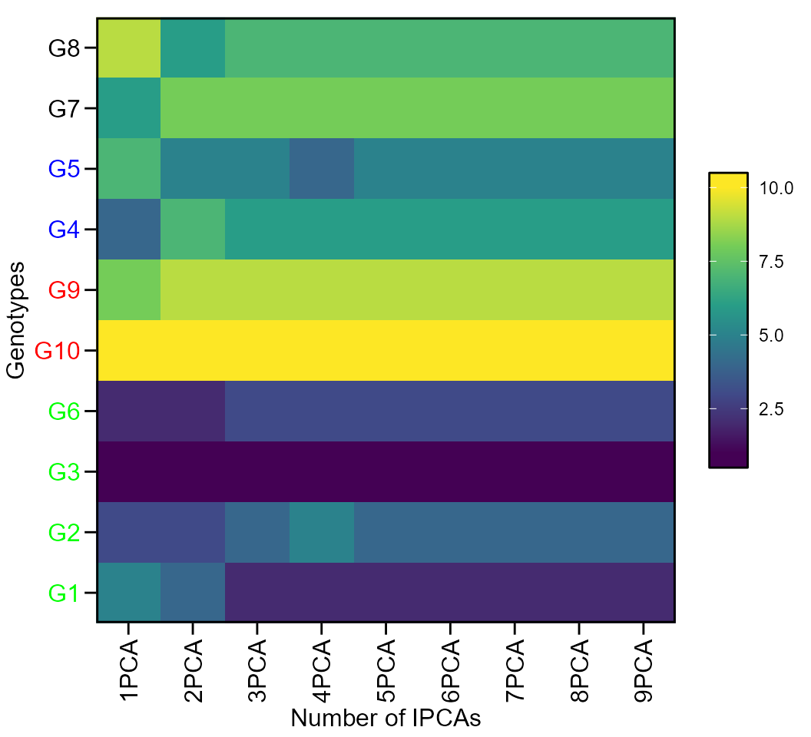
Others BLUP-based stability indexes
Colombari Filho et al. (2013) have shown the use of three BLUP-based indexes for selecting genotypes with performance and stability. The first is the harmonic mean of genotypic values -or BLUPS- (HMGV) a stability index that considers the genotype with the highest harmonic mean across environments as the most stable, as follows:
The second is the relative performance of genotypic values (RPGV), an adaptability index estimated as follows:
The third and last is the harmonic mean of relative performance of genotypic values (HMRPGV), a simultaneous selection index for stability, adaptability and mean performance, estimated as follows:
Res_ind <-
data_ge %>%
gamem_met(ENV, GEN, REP, GY, verbose = FALSE) %>%
blup_indexes()
# Warning: The WAASB index was not computed.
# Use an object computed with `waasb()` to get this index.
print_table(Res_ind$GY)FAI-BLUP selection index
The FAI-BLUP is a multi-trait index based on factor analysis and
ideotype-design recentely proposed by Rocha,
Machado, and Carneiro (2018). It is
based on factor analysis, when the factorial scores of each ideotype are
designed according to the desirable and undesirable factors. Then, a
spatial probability is estimated based on genotype-ideotype distance,
enabling genotype ranking. Here we will use the mixed-model
mod as inpute data. By default, the selection is made to
increase the value of all traits. Change this default with the arguments
DI and UI.
data_g %>%
gamem(GEN, REP, everything()) %>%
fai_blup() %>%
plot()
# Evaluating trait PH |=== | 7% 00:00:00 Evaluating trait EH |====== | 13% 00:00:00 Evaluating trait EP |========= | 20% 00:00:00 Evaluating trait EL |============ | 27% 00:00:00 Evaluating trait ED |=============== | 33% 00:00:00 Evaluating trait CL |================== | 40% 00:00:00 Evaluating trait CD |===================== | 47% 00:00:00 Evaluating trait CW |======================= | 53% 00:00:00 Evaluating trait KW |========================== | 60% 00:00:00 Evaluating trait NR |============================= | 67% 00:00:01 Evaluating trait NKR |================================ | 73% 00:00:01 Evaluating trait CDED |================================== | 80% 00:00:01 Evaluating trait PERK |==================================== | 87% 00:00:01 Evaluating trait TKW |======================================== | 93% 00:00:01 Evaluating trait NKE |===========================================| 100% 00:00:01
# ---------------------------------------------------------------------------
# P-values for Likelihood Ratio Test of the analyzed traits
# ---------------------------------------------------------------------------
# model PH EH EP EL ED CL CD CW KW
# Complete NA NA NA NA NA NA NA NA NA
# Genotype 0.051 0.454 0.705 0.786 2.73e-05 2.25e-06 0.118 1.24e-05 0.0253
# NR NKR CDED PERK TKW NKE
# NA NA NA NA NA NA
# 0.0056 0.216 9.14e-06 4.65e-07 0.00955 0.00952
# ---------------------------------------------------------------------------
# Variables with nonsignificant Genotype effect
# PH EH EP EL CD NKR
# ---------------------------------------------------------------------------
#
# -----------------------------------------------------------------------------------
# Principal Component Analysis
# -----------------------------------------------------------------------------------
# eigen.values cumulative.var
# PC1 5.35 35.67
# PC2 4.76 67.41
# PC3 3.06 87.80
# PC4 0.87 93.61
# PC5 0.39 96.24
# PC6 0.30 98.25
# PC7 0.10 98.91
# PC8 0.08 99.44
# PC9 0.05 99.74
# PC10 0.04 99.98
# PC11 0.00 100.00
# PC12 0.00 100.00
# PC13 0.00 100.00
# PC14 0.00 100.00
# PC15 0.00 100.00
#
# -----------------------------------------------------------------------------------
# Factor Analysis
# -----------------------------------------------------------------------------------
# FA1 FA2 FA3 comunalits
# PH -0.05 -0.90 0.20 0.85
# EH 0.03 -0.77 0.57 0.91
# EP 0.14 -0.31 0.85 0.83
# EL 0.08 -0.13 -0.88 0.80
# ED 0.63 -0.70 -0.02 0.90
# CL 0.97 -0.02 -0.04 0.94
# CD 0.17 0.04 -0.95 0.94
# CW 0.89 -0.32 -0.14 0.91
# KW 0.36 -0.87 -0.29 0.98
# NR 0.03 -0.87 0.12 0.78
# NKR -0.73 -0.10 -0.47 0.77
# CDED 0.74 0.62 -0.07 0.94
# PERK -0.92 -0.12 0.00 0.86
# TKW 0.91 -0.09 -0.13 0.85
# NKE -0.49 -0.79 -0.19 0.90
#
# -----------------------------------------------------------------------------------
# Comunalit Mean: 0.8780411
# Selection differential
# -----------------------------------------------------------------------------------
# # A tibble: 15 × 9
# VAR Factor Xo Xs SD SDperc h2 SG SGperc
# <chr> <dbl> <dbl> <dbl> <dbl> <dbl> <dbl> <dbl> <dbl>
# 1 CL 1 28.4 30.0 1.59 5.58 0.901 1.43 5.03
# 2 CW 1 20.8 24.0 3.17 15.3 0.880 2.79 13.4
# 3 NKR 1 30.4 30.5 0.0603 0.198 0.452 0.0273 0.0897
# 4 CDED 1 0.595 0.599 0.00487 0.819 0.884 0.00431 0.724
# 5 PERK 1 87.6 86.9 -0.706 -0.806 0.916 -0.647 -0.738
# 6 TKW 1 318. 323. 5.70 1.79 0.712 4.06 1.28
# 7 PH 2 2.17 2.14 -0.0258 -1.19 0.610 -0.0157 -0.726
# 8 EH 2 1.08 1.05 -0.0231 -2.14 0.308 -0.00710 -0.658
# 9 ED 2 47.9 50.1 2.18 4.55 0.869 1.89 3.96
# 10 KW 2 147. 156. 9.17 6.24 0.659 6.04 4.12
# 11 NR 2 15.8 16.4 0.600 3.80 0.736 0.442 2.80
# 12 NKE 2 468. 492. 23.9 5.10 0.713 17.0 3.64
# 13 EP 3 0.496 0.492 -0.00385 -0.776 0.171 -0.000657 -0.132
# 14 EL 3 14.7 14.7 0.0477 0.325 0.126 0.00600 0.0409
# 15 CD 3 15.8 16.2 0.437 2.77 0.532 0.233 1.47
#
# -----------------------------------------------------------------------------------
# Selected genotypes
# H5 H2
# -----------------------------------------------------------------------------------
- IMPORTANT
fai_blup()recognizes models fitted with bothgamem_met()andwaasb(). For balanced data (all genotypes in all environments)waasb()andgamem_met()will return the same model. In case of unbalanced trials, the functionwaasb()will return an error since a complete two-way table is required to the singular value decomposition procedure.
Rendering engine
This vignette was built with pkgdown. All tables were produced
with the package DT using the
following function.
library(DT) # Used to make the tables
# Function to make HTML tables
print_table <- function(table, rownames = FALSE, digits = 3, ...){
df <- datatable(table, rownames = rownames, extensions = 'Buttons',
options = list(scrollX = TRUE,
dom = '<<t>Bp>',
buttons = c('copy', 'excel', 'pdf', 'print')), ...)
num_cols <- c(as.numeric(which(sapply(table, class) == "numeric")))
if(length(num_cols) > 0){
formatSignif(df, columns = num_cols, digits = digits)
} else{
df
}
}